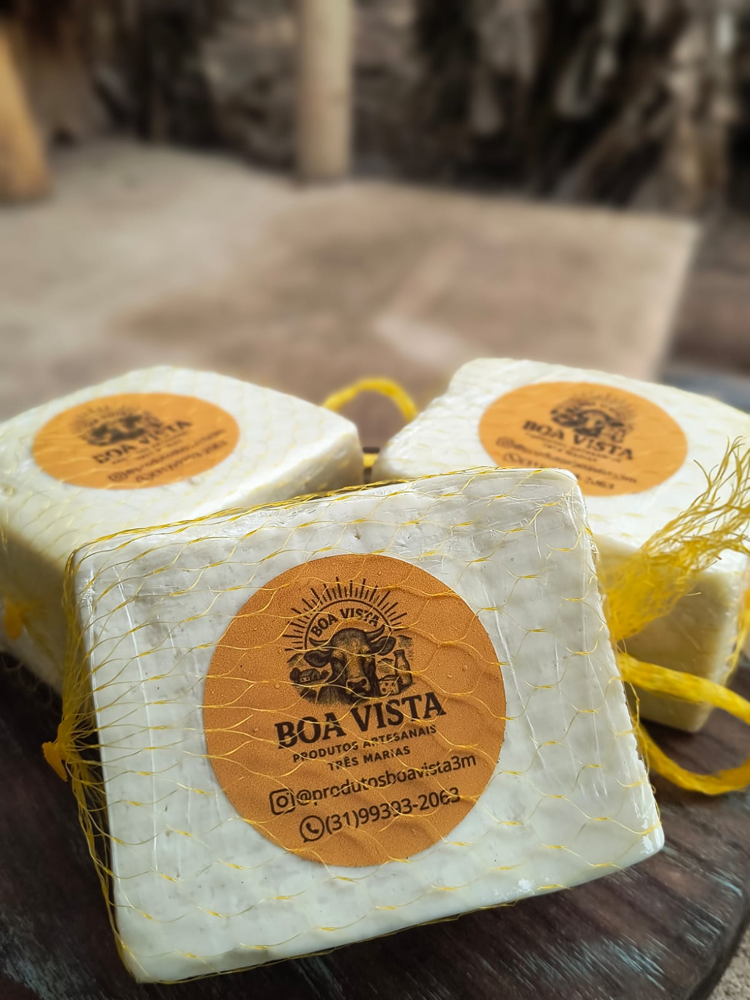
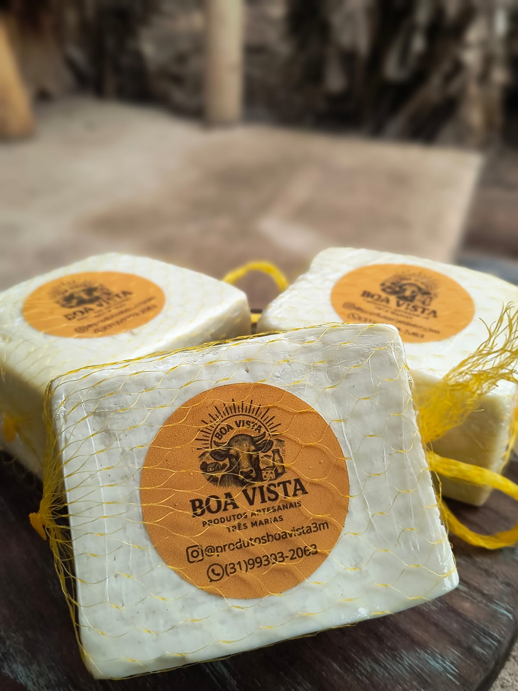

Desde 2020, a Fazenda Boa Vista se dedica à produção e seleção de produtos da roça de alta qualidade, sempre prezando pelo cuidado em cada etapa — do campo até a sua mesa. Trabalhamos com responsabilidade, atenção aos detalhes e respeito aos nossos clientes, oferecendo queijos, doces, mel e ovos produzidos com padrões artesanais e excelência.
Nosso compromisso vai além do sabor: buscamos confiança, transparência e constância na entrega, garantindo produtos frescos e selecionados com rigor. Atendemos com orgulho as regiões de Sete Lagoas, Belo Horizonte e Três Marias, levando o verdadeiro sabor da roça com pontualidade e cuidado.
Mais do que vender produtos, cultivamos relações baseadas na qualidade, no respeito e na confiança de quem escolhe a Fazenda Boa Vista.